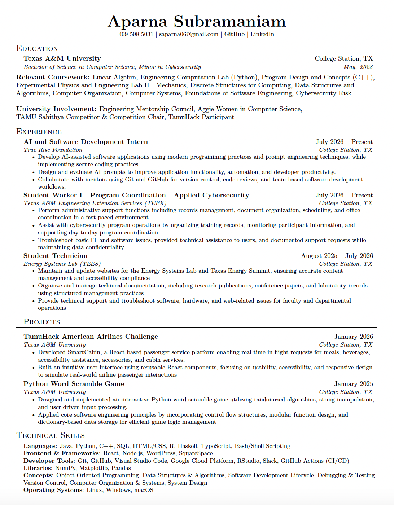

I am interested in artificial intelligence because it is changing the way software is designed, developed, and used. I want to explore how AI can assist developers, improve efficiency, and create more adaptive technology. I am also interested in understanding how AI systems can be evaluated and used responsibly.
Software development interests me because it combines programming, creativity, and problem-solving to turn ideas into useful solutions. I enjoy thinking about how different components of a system work together and how software can be designed to provide a better user experience.
I am interested in cybersecurity because technology needs to be designed with security in mind from the beginning. Learning about cybersecurity helps me understand potential risks and how developers can build systems that protect information and remain dependable while meeting the needs of their users.